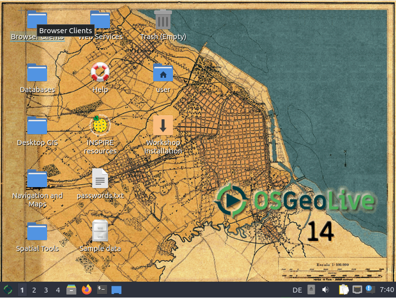
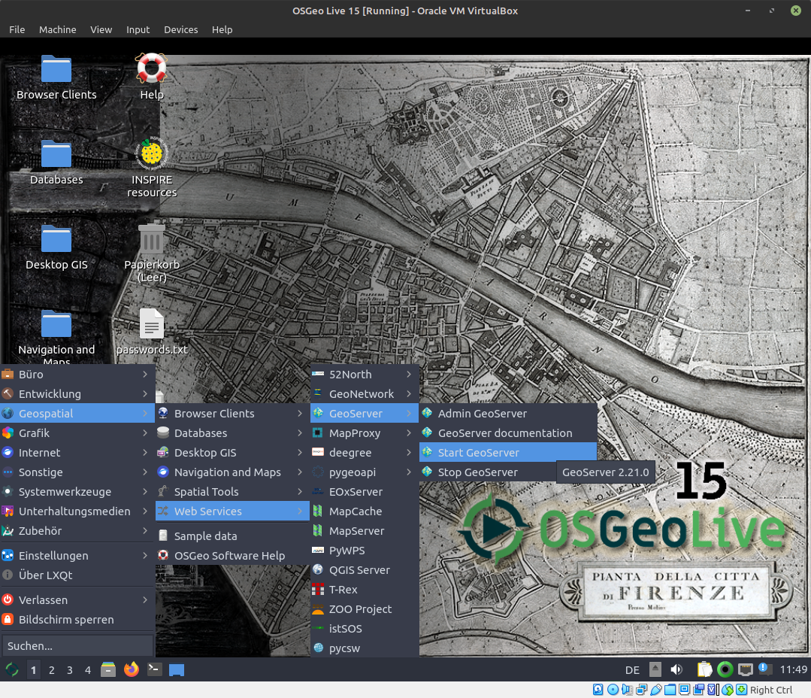

Vorarbeiten und generelle Informationen
Bevor wir mit dem Workshop starten können, führen Sie bitte die folgenden Schritte aus:
- Rechner mit OSGeoLive-Medium hochfahren
- Sprache auswählen (Deutsch für korrekte Tastaturbelegung)
- Lubuntu ohne Installation ausprobieren auswählen
- Benutzer:
user; Passwort:user(wird vermutlich nicht benötigt)

Pfade, URLs und Zugangsdaten
- GeoServer: http://localhost:8082/geoserver (muss zunächst gestartet werden, siehe unten)
- Zugangsdaten GeoServer:
- Benutzer:
admin - Passwort:
geoserver
- Benutzer:
- GeoServer (Dateisystem):
/usr/local/lib/geoserver-2.18.1/
Starten des GeoServers
Der GeoServer kann durch einen Doppelklick auf Start GeoServer im Ordner Web Services auf dem Desktop der OSGeoLive gestartet werden:
INFO
Kann der GeoServer nicht über den oben genannten Weg gestartet werden oder verhält sich zur Laufzeit unerwartet (wenn z.B. das Speichern eines Arbeitsbereichs nicht möglich ist), sollte er stattdessen über den folgenden Befehl im Terminal gestartet werden:
sudo /usr/local/lib/geoserver/bin/startup.shDas Terminal bzw. der Prozess muss dabei während des Workshops geöffnet bleiben!


Im folgenden Abschnitt werden wir mit GeoServer-Basiswissen fortfahren.